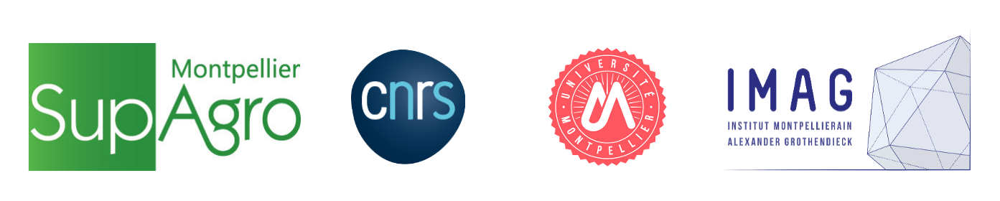
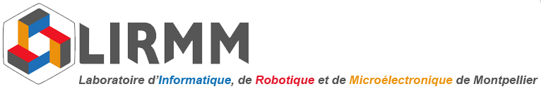

See my work

P.h.D project : Statistical Inference of Epigenomic and Genomic Regulatory Circuits in
Arabidopsis thaliana in
response to climate change.
Recent large scale study have shown that plants exposed to increasing levels of atmospheric carbon
dioxyde tend to grow more, at the expense of their nutritonnal value.
The aim of the project is to statistically infer the gene regulatory of network of Arabidopsis
thaliana's roots in response to
higher C02, and how it alter plant's nutrition pathways. This will be done notably
by integrating
cell-type specific dynamic epigenomes (ATAC-Seq data) and transcriptomes (RNA-Seq data), as well as
phenotypic data. Regulatory circuits will be used to infer new
major regulatory modules
and genes of the response to a climate-induced stress.
Tutored by CNRS researchers Dr Antoine Martin and Dr Sophie Lèbre.

Master internship :
I developped machine learning models to predict the interactions
between chromosomic regions in the human genome, based on CAGE data and 3C techniques.
Internship report (French)

Engineering internship :
Development of software tools for the 3D tracking of
biological objects in label free images, Nanolive SA, Lausanne, Switzerland.
- October 2019 : Network Analysis, Inference, and Modeling course, French society of
Statistics.
- 2018-2019 : MASTER in Artificial Intelligence Université Claude Bernard Lyon1, double
degree.

- 2014-2019 : Bioinformatics and modelling engineering degree National Institute of applied
sciences Lyon.

- 2014 : Scientific Bachelor degree Engineering sciences, mathematics option.